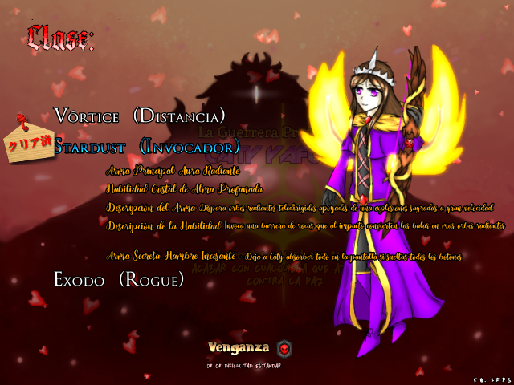
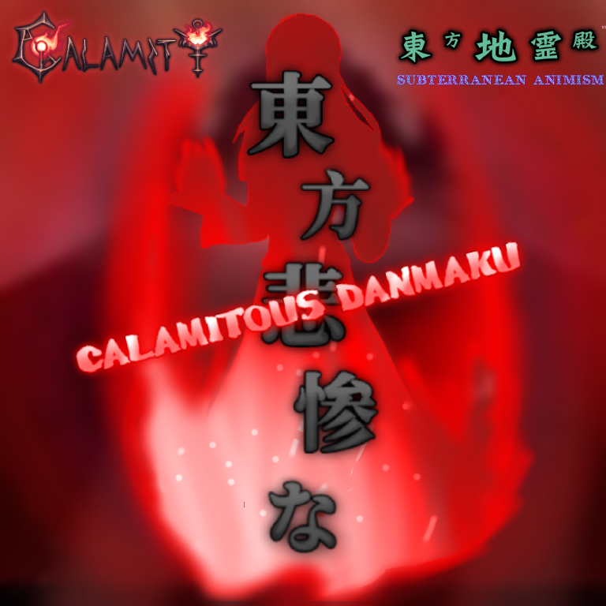

Calamitous Danmaku is a texture replacement mod for Touhou 11 SA - Subterranean Animism, it's development started since April, 2024 and it was finally released on August 14th, 2024 as a texture pack-mod that changes all of the original game, including shottypes and endings like IE. It was the first cronologically, but the second in development to replace any texture from the game.
This mod is an AU based on the Terraria Calamity mod and Wrath of the Gods Addon, but it's not considered a crossover. As an AU, this mod contains an alternative story about Calamity and includes OCs from the creators.
You have two selectable characters, Caty Yafumo and Crono, you can choose between three different shottypes for each character. These are very powerful and have special features, without counting the vanilla abilities.
Each shottype represents a Terraria Class:
Caty Yafumo:
Crono:

Take advange of those broken shottypes to pass the game easily!
By the way, all characters you will see as a boss are from the mod's endgame.
This one follows THCaty and IE story, and so, the Guardians AU. In resume:
When everything seemed to be as always, the Guardians noticed some creatures were strangely empowered. In a way to discover what was causing that, some old enemies will try to take advange and get vengeance.
Even so, what was the intention of the responsible?
This mod is one of the first on replacing all of the game tracks, including the title theme.
Authors:
Of course, the tracks are all from the Calamity mod.

Kanji: 東方悲惨な
Type: Retexture, Full
Release: August 14th, 2024
Developers: Dark Caty
Dimension: Terraria
Music: DM DOKURO, CD Music, Pinpin Neon
Credits: Calamity Team, WotG
Languaje: Chilean Spanish